전기공사기사 (2012-09-15 기출문제)
1과목: 전기응용 및 공사재료
1. 단상 유도 전동기에서 보조권선의 양단을 서로 바꾸어 접속하거나 브러시의 위치를 이동시키면 회전방향이 바뀐다. 회전방향을 변경할 수 없는 것은?
- 분상 기동형
- 콘덴서 기동형
- 반발 기동형
- 세이딩 코일형
(정답률: 77%)

2. 사이리스터를 턴 온(turn on)하는 가장 좋은 방법은?
- 인가전압 변화율 증가
- 소자의 온도 증가
- 소자 인가전압 증가
- 게이트에 전압 인가
(정답률: 89%)
3. 다음 중 일반적으로 휘도가 가장 높은 램프는?
- 백열전구
- 고압 수은등
- 탄소 아크등
- 형광등
(정답률: 62%)
4. 폭 30[m]인 도로의 중앙에 높이 6[m], 전광속 25000 lm]인 400[W] 고압 나트륨등을 20[m]간격으로 가설할때 도로의 평균조도[lx]는? (단, 조명률 0.25, 감광보상율은 1.3이다.)
- 8.0
- 10.4
- 15.5
- 48.0
(정답률: 71%)
5. 유전가열의 특징을 나타낸 것 중 옳지 않은 것은?
- 온도상승이 신속하며 온도상승의 속도제어가 쉽다.
- 반도체의 정련 단결정의 제조 등 특수 열처리가 가능하다.
- 전원을 제거하면 즉시 가열은 정지된다.
- 가열이 균일하게 행해지며, 열전도의 대소나 피가 열물의 두께 등에 관계없다.
(정답률: 66%)
6. 다음 중에서 전력용 정류 장치로 우수한 것은?
- 아산화동 정류기
- 실리콘 정류기
- 셀렌 정류기
- 게르마늄 정류기
(정답률: 83%)
7. 바리스터(Varistor)의 용도는?
- 전압증폭
- 정전압
- 과도 전압에 대한 회로보호
- 전류특성을 갖는 4단자 반도체 장치에 사용
(정답률: 87%)
8. 8600[kcal/kg]의 석탄 10[kg]에서 나오는 열량은 50[kW] 전열기를 몇 시간[h] 사용한 것과 같은가?
- 2
- 4
- 5
- 7
(정답률: 71%)
9. 가정용 전기기기에 가장 많이 사용되는 전동기는?
- 단상 유도 전동기
- 분권 직류 전동기
- 3상 유도 전동기
- 단상 정류자 전동기
(정답률: 73%)
10. 궤도의 확도(slack)를 표시하는 식은? (단, R: 곡선반지름[m], l: 고정차축 거리[m])
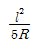
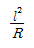
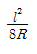
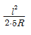
(정답률: 84%)
11. 가공 배전선의 인류 및 내장개소에서 전선을 지지 하기 위해 사용하는 것은?
- 활선 크램프
- 데드엔드 크램프
- 인류스트랍
- 배선용 래크
(정답률: 53%)
12. 고압회로에 사용되는 퓨즈는?
- 방출형 퓨즈
- 플러그 퓨즈
- 관형 퓨즈
- 텅스텐 퓨즈
(정답률: 63%)
13. 다음 중 축전지가 충분히 충전되었을 때 양극판의 빛깔은 무슨 색인가?
- 황색
- 청색
- 적갈색
- 회백색
(정답률: 81%)
14. 특별 제3종 접지공사의 접지선 굵기는 공칭단면적 몇 [mm2] 이상의 연동선 이어야 하는가?(관련 규정 개정전 문제로 여기서는 기존 정답인 4번을 누르면 정답 처리됩니다. 자세한 내용은 해설을 참고하세요.)
- 8
- 6
- 1.25
- 2.5
(정답률: 64%)
15. 바닥 밑으로 매입 배선할 때 사용하는 것은?
- 플로어 박스
- 엔트런스 캡
- 폭 너트
- 픽스쳐 스터드
(정답률: 88%)
16. 전선 및 케이블의 중간 접속제로 사용되는 것은?
- 칼부럭
- 볼트식 터미널
- 압착 슬리브
- 압착 터미널
(정답률: 69%)
17. 전문상점의 조명시설에 대한 설명으로 잘못된 것은?(관련 규정 개정전 문제로 여기서는 기존 정답인 3번을 누르면 정답 처리됩니다. 자세한 내용은 해설을 참고하세요.)
- 전로의 사용전압은 대지전압을 300V 이하로 하여야 한다.
- 15A 분기회로 또는 20A 배선용 차단기 분기회로에서 공급한다.
- 조명기구의 지표상 높이는 차량이 통행하는 도로에서 4M 이상으로 한다.
- 금속제 연쇄노점에 시설하는 금속관은 특별 제3종 접지공사를 한다.
(정답률: 71%)
18. 약호 중 전류 전환 스위치를 표시하는 것은?
- AS
- PF
- PC T
- ZCT
(정답률: 89%)
19. 케이블을 구부리는 경우 피복이 손상되지 않도록 굴곡부의 곡률반경을 원칙적으로 바깥지름의 12배 이상으로 하는 케이블은?
- 비닐외장 케이블
- 폴리에틸렌외장 케이블
- 콘크리트 직매용 케이블
- 알루미늄피 케이블
(정답률: 66%)
20. 합성수지몰드 배선시공시 사람의 접촉이 없도록 시설하는 경우의 규격은?
- 홈의 폭 3.5cm 이하, 두께 2mm 이상
- 홈의 폭 3.5cm 이하, 두께 1mm 이상
- 홈의 폭 5cm 이하, 두께 2mm 이상
- 홈의 폭 5cm 이하, 두께 1mm 이상
(정답률: 50%)
2과목: 전력공학
21. 서지파(진행파)가 서지 임피던스 Z1의 선로측에서 서지 임피던스 Z2의 선로측으로 입사할 때 투과계수(투과파전압÷입사파전압) b를 나타내는 식은?
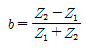
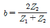
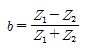
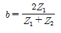
(정답률: 16%)
22. 30000[kVA], 임피이던스 15[%]인 3상 변압기가 있다. 이 변압기의 2차측에서 3상 단락 하였을 때의 단락 용량은 몇 [kVA]인가?
- 100000
- 200000
- 300000
- 450000
(정답률: 19%)
23. 비접지식 3상 송배전 계통에서 선로정수 중 1선 지락 고장시 고장 전류를 계산하는 데 사용되 정전 용량은?
- 작용 정전용량
- 대지 정전용량
- 합성 정전용량
- 선간 정전용량
(정답률: 18%)
24. 345[kV]용에서 사용되는 복도체는 같은 단면적의 단도체에 비하여 어떠한가?
- 인덕턴스, 정전용량이 감소한다.
- 인덕턴스, 정전용량이 증가한다.
- 인덕턴스는 증가하고, 정전용량은 감소한다.
- 인덕턴스는 감소하고, 정전용량은 증가한다.
(정답률: 18%)
25. 전력계통에서 사용되고 있는 GCB(Gas Circuit Breaker)용 가스는?
- SF6 가스
- 알곤가스
- 네온가스
- N2 가스
(정답률: 23%)
26. 전력선측의 유도장애 방지대책이 아닌 것은?
- 전력선과 통신선의 이격거리를 증대한다.
- 전력선의 연가를 충분히 한다.
- 배류코일을 사용한다.
- 차폐선을 설치한다.
(정답률: 17%)
27. 원자로의 구성 요소가 아닌 것은?
- 감속재
- 냉각재
- 보일러
- 제어봉
(정답률: 18%)
28. 송전선에 코로나가 발생하면 전선이 부식된다. 무엇에 의하여 부식되는가?
- 산소
- 질소
- 수소
- 오존
(정답률: 22%)
29. 다음 중 모선방식의 종류에 속하지 않는 것은?
- 단일 모선
- 2중 모선
- 3중 모선
- 환상 모선
(정답률: 22%)
30. 전력계통의 전압조정과 무관한 것은?
- 발전기의 조속기
- 발전기의 전압조정장치
- 전력용콘덴서
- 전력용 분로리액터
(정답률: 17%)
31. 3상 송전선로의 선간전압이 100[kV], 기준용량이 10000[kVA]일 때, 1선당의 선로리액턴스 150[Ω]을 % 임피던스로 환산하면 몇 [%]인가?
- 5
- 10
- 15
- 20
(정답률: 20%)
32. 3상 송전선로에서 선간단락이 발생하였을 때 다음 중 옳은 것은?
- 정상전류와 역상전류가 흐른다.
- 정상전류, 역상전류 및 영상전류가 흐른다.
- 역상전류와 영상전류가 흐른다.
- 정상전류와 영상전류가 흐른다.
(정답률: 19%)
33. 교류발전기나 주변압기의 내부고장 보호용으로 가장 적합한 계전기는?
- 과전류 계전기
- 과전압 계전기
- 비율차동 계전기
- 거리 계전기
(정답률: 21%)
34. 동일 전력을 동일 선간전압, 동일 역률로 동일 거리에 보낼 때 사용하는 전선의 총 중량이 같으면 3상3선식인 때와 단상2선식일 때의 전력 손실비는?
- 1
- 3/4
- 2/3
- 1/√3
(정답률: 18%)
35. 3상 송전선로와 통신선이 병행되어 있는 경우에 통신 유도장해로서 통신선에 유도되는 정전유도전압은?
- 통신선의 길이에 비례한다.
- 통신선의 길이의 자승에 비례한다.
- 통신선의 길이에 반비례한다.
- 통신선의 길이와는 관계가 없다.
(정답률: 11%)
36. 피뢰기의 접지 공사는?
- 제1종 접지공사
- 제2종 접지공사
- 제3종 접지공사
- 특별 제3종 접지공사
(정답률: 20%)
37. 송전선의 파동임피던스를 Z0[Ω], 전파속도를 v라 할 때 이 송전선의 단위길이에 대한 인덕턴스는 몇[H]인가? (단, 저항과 누설컨덕턴스는 무시한다.)
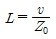
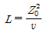
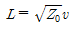
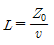
(정답률: 16%)
38. 수력발전소에서 특유속도가 가장 높은 수차는?
- 펠톤수차
- 프로펠라수차
- 프란시스수차
- 사류수차
(정답률: 13%)
39. 선로 고장발생시 타 보호기기와의 협조에 의해 고장 구간을 신속히 개방하는 자동구간 개폐기로서 고장전류를 차단할 수 없어 차단 기능이 있는 후비보호장치 와 직렬로 설치되어야 하는 배전용 개폐기는?
- 배전용 차단기
- 부하 개폐기
- 컷아웃 스위치
- 섹셔널라이저
(정답률: 22%)
40. 그림에서 4단자정수
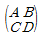
는? (단, Es, Is는 수전단 전압, 전류, Er, Ir은 수전단전압, 전류이고 Y 는 병렬 어드미턴스이다.)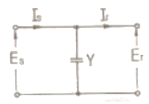
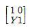
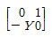
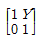
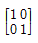
(정답률: 18%)
3과목: 전기기기
41. 직류기에서 정류코일의 자기 인덕턴스를 L 이라 할때 정류코일의 전류가 정류주기 Tc 사이에서 Ic에서 -Ic로 변한다면 정류코일의 리액턴스 전압(평균치)은?
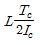
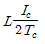
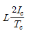
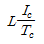
(정답률: 19%)
42. 반파 정류회로에서 직류전압 220[V]를 얻는데 필요한 변압기 2차 상전압은? (단, 부하는 순저항이며 정류기 내의 전압강하는 30[V], 기타 전압강하는 무시한다.)
- 약 250[V]
- 약 355[V]
- 약 463[V]
- 약 555[V]
(정답률: 12%)
43. 직류발전기의 유기 기전력 260[V], 극수 6, 정류자편수가 162인 정류자 편간 평균 전압[V]은 약 얼마인가? (단, 전기자 권선은 중권이다.)
- 9.63
- 10.25
- 12.25
- 13.94
(정답률: 18%)
44. 단상 변압기 2대를 V결선하여 소비번력 27[kW], 역율 80[%]의 3상 부하에 전력을 공급하고자 한다. 단상 변압기 1대의 최소용량[kVA]은?
- 약 10
- 약 15
- 약 20
- 약 30
(정답률: 14%)
45. 1상당 1차저항과 리액턴스가 각각 r1, x1, 1차에 환 산한 2차저항이 각각 r2, x2인 권선형 유도전동기가있다. 2차회로는 Y결선으로 되어 있을 때 기동시에 최대토크를 발생하려면 2차 삽입저항 R은?
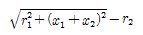
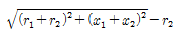
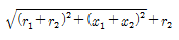
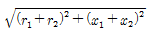
(정답률: 11%)
46. 2대의 직류발전기를 병렬 운전할 때 병렬운전조건 중 옳지 않은 것은?
- 단자전압이 같을 것
- 극성이 일치할 것
- 주파수가 일치할 것
- 외부 특성이 어느 정도 수하 특성일 것
(정답률: 13%)
47. 비 돌극형 동기발전기 1상의 단자전압을 V, 유기기전력을 E, 동기리액턴스를 Xs, 부하각이 이고 전기자 저항을 무시할 때 1상의 최대출력은?
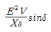
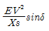
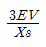
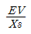
(정답률: 17%)
48. 다음 괄호 ( )안에 알맞은 내용은?
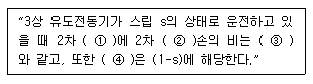
- ① 출력, ② 동, ③ 1-s, ④ 2차입력
- ① 입력, ② 동, ③ s, ④ 2차효율
- ① 출력, ② 철, ③ 1-s, ④ 2차효율
- ① 입력, ② 동, ③ s, ④ 2차입력
(정답률: 17%)
49. 전압변동률이 작은 동기발전기의 특징은?
- 동기리액턴스가 크다.
- 전기자 반작용이 크다.
- 단락비가 크다.
- 값이 싸진다.
(정답률: 20%)
50. 직권 전동기의 속도가 고속이 되어 아주 위험한 경우는 다음 중 어떤 경우인가?
- 과여자
- 무부하
- 과부하
- 전기자에 저저항접속
(정답률: 17%)
51. 전기기계에 있어서 히스테리시스 손을 감소시키기 위한 방법은?
- 성층철심 사용
- 규소강판 사용
- 보극 설치
- 보상권선 설치
(정답률: 18%)
52. 60[Hz], 6300/210[V], 15[kVA]의 단상변압기에 있어서 임피던스 전압은 185[V], 임피던스 와트는 250[W]이다. 이 변압기를 5[kVA], 지역률 0.8의 부하를 건 상태에서의 전압변동률은 약 얼마인가?
- 0.89
- 0.93
- 0.95
- 0.80
(정답률: 12%)
53. 동기 발전기 권선의 층간 단락 보호에 가장 적합한 계전기는?
- 온도 계전기
- 접지 계전기
- 차동 계전기
- 과부하 계전기
(정답률: 19%)
54. 3상 유도전동기의 기동법 중 전전압 기종에 대한 설명으로 옳지 않은 것은?
- 소용량 농형 전동기의 기동법이다.
- 전동기 단자에 직접 정격전압을 가한다.
- 소용량으로 기동 시간이 길다.
- 기동시에 역률이 좋지 않다.
(정답률: 16%)
55. 단상 직권 정류자 전동기에서 보상 권선과 저항 도선의 작용을 설명한 것 중 옳지 않은 것은?
- 역률을 좋게 한다.
- 변압기의 기전력을 크게 한다.
- 전기자 반작용을 제거해 준다.
- 저항 도선은 변압기 기전력에 의한 단락 전류를 작게 한다.
(정답률: 12%)
56. 변압기의 무부하 시험과 관계있는 것은?
- 여자 어드미턴스
- 임피던스 와트
- 전압 변동율
- 내부 임피던스
(정답률: 14%)
57. 직류 분권 발전기의 극수 4, 전기자 총도체수 600으로 매분 600회전 할 때 유기기전력이 220[V] 라한다. 전기자 권선이 파권일 때 매극자속수[wb]는약 얼마인가?
- 0.0154
- 0.0183
- 0.0192
- 0.0199
(정답률: 19%)
58. 반작용 전동기(reaction motor)에 관한 설명 중 틀린 것은?
- 여자를 약하게 하면 뒤진 전류가 흐르고 전기자 반작용은 계자를 강화시키는 작용을 한다.
- 뒤진 전류가 흐를 때는 직류여자가 없어도 계자가 여자되므로 계자권선이 없다.
- 3상 교류를 가하면 전기자 전류의 무효분은 계자 속을 만들며 전류의 유효분사이의 토크가 발생한다.
- 직류여자를 필요로 하고, 철극성 때문에 동기속도 이하로 회전한다.
(정답률: 9%)
59. 3상 유조전동기의 회전자 입력 P2, 슬립 s일 때 2차 동손은?
- (1-s)P2
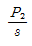
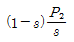
- sP2
(정답률: 20%)
60. 직류전동기의 워드 레오나드 속도제어 방식은?
- 전압제어
- 직병렬제어
- 저항제어
- 계자제어
(정답률: 18%)
4과목: 회로이론 및 제어공학
61. 3상 불평형 전압에서 역상전압이 25[V]이고, 정상 전압이 100[V], 영상전압이 10[V]라 할 때, 전압의 불평형률은?
- 0.10
- 0.25
- 0.35
- 0.45
(정답률: 20%)
62. 9/4[kW] 직류 전동기 2대를 매일 5시간씩 30일 동안 운전할 때 사용한 전력량은 약 몇 [kWh]인가? (단, 전동기는 전부하로 운전되는 것으로 하고 효율은 80[%]이다.)
- 650[kWh]
- 745[kWh]
- 844[kWh]
- 980[kWh]
(정답률: 12%)
63. 다음과 같은 회로의 전달함수를 구하면?
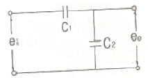
- C1+C2
- C2/C1
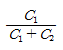
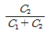
(정답률: 14%)
64. R=200[Ω], L=1.59[H], C=3.315[μF]를 직렬로 연결한 회로에 e=141.4sin377t[V]의 전압을 인할 때 C의 단자전압은 약 몇 [V]인가?
- 71[V]
- 212[V]
- 283[V]
- 401[V]
(정답률: 10%)
65. 다음 함수의 역 라플라스 변환을 구하면?
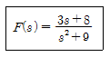
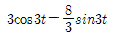
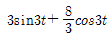
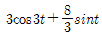
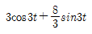
(정답률: 14%)
66. 회로에서 V(t)=120sin(100t+θ)[V]이다. t=0에서 스위치를 달았을 때 전류의 파형에 과도현상이 나타나지 않게 하려면 θ의 값은 약 몇 도인가?
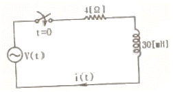
- 30.2°
- 36.9°
- 47.6°
- 53.1°
(정답률: 16%)
67. 비정현파를 구성하는 일반적인 성분이 아닌 것은?
- 기본파
- 고조파
- 직류분
- 삼각파
(정답률: 18%)
68. 6상 성형 상전압이 100[V]일 때 선간전압은 몇 [V]인가?
- 200[V]
- 173[V]
- 141[V]
- 100[V]
(정답률: 16%)
69. 분포정수회로에서 선로의 특성 임피던스를 Z0, 전파 정수를 r 라 할 때 선로의 병렬 어드미턴스[℧]는?
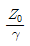
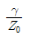
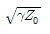
- rZ0
(정답률: 14%)
70. 회로에서 4단자 정수 A, B, C, D 의 값은?
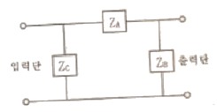
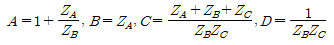
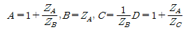
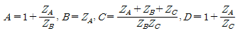
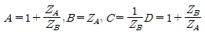
(정답률: 17%)
71. 전달함수 인 제어계의 임펄스응답 c(t)는?
- e-at
- 1-e-at
- te-at
-
(정답률: 19%)
72. 계통방정식이 로 표시되는 시스템의 시정수는? (단, J는 관성 모멘트, f는 마찰 제동계수, w는 각속도, T는 회전력이다.)
- J/f
- f/J
- -J/f
- f • J
(정답률: 14%)
73. 지연요소(dead time element)는 제어계의 안정도에 어떤 영향을 미치는가?
- 안정도에 관계없다.
- 안정도를 개선한다.
- 안정도를 저하시킨다.
- 상대적 안정도의 척도역할을 한다.
(정답률: 10%)
74. 다음 함수를 z변환하였을 때 옳지 않은 것은?
- σ(t)=1
(정답률: 15%)
75. 그림과 같은 신호 흐름 선도의 전달함수 는?
- 2
- 4
- 6
- 8
(정답률: 12%)
76. 다음 시스템의 상태 천이 행렬을 구하면?
(정답률: 10%)
77. 단위 피드백제어계의 개루프 전달함수가 일 때 계단입력에 대한 정상 편차는?
- 2/3
- 3/2
- 1/3
- 1/2
(정답률: 13%)
78. 제어계의 특성방정식이 a0sn+a1sn-1+..........+an-1s+an=0로 했을 때 이 방정식의 근이 전부 복소평면의 좌반 평면에 있고 제어계가 안정하기 위한 필요충분조건이 아닌 것은?
- 계수 a0, a1……, an가 모두 존재할 것
- 계수가 모두 동부호일 것
- 훌비쯔의 행렬식이 전부 정(正)일 것
- 루스(Routh)의 행렬식이 전부 정(正)일 것
(정답률: 13%)
79. 제어계의 종합 전달함수 값이로 표시될 경우 안정성의 판정은?
- 안정
- 불안정
- 임계상태
- 알 수 없음
(정답률: 19%)
80. 다음 중 DIAC(diode AC semi conductor switch)의 V-I특성곡선은?
(정답률: 15%)
5과목: 전기설비기술기준 및 판단기준
81. 시가지 도로를 횡단하여 저압 가공전선을 시설하는 경우 지표상 높이는 몇 [m] 이상으로 하여야 하는가?
- 4.0
- 5.0
- 6.0
- 6.5
(정답률: 15%)
82. 태양전지 모듈 등의 시설에 관한 사항으로 틀린 것은?
- 옥내에 시설하는 경우에는 합성수지관공사, 금속 관공사, 애자사용공사로 시설한다.
- 태양전지 모듈에 접속하는 부하측 전로에는 그 접속점에 근접하여 개폐기를 시설한다.
- 태양전지 모듈을 병렬로 접속하는 전로에는 그 전로에 단락이 생긴 경우에 전로를 보호하는 과전류 차단기를 시설한다.
- 전선은 공칭단면적 2.5[mm2] 이상의 연동선 또는 이와 동등 이상의 세기 및 굵기를 사용한다.
(정답률: 17%)
83. 주상 변압기의 1차 전압 탭이 6900[V], 6600[V], 6300[V], 6000[V B이다. 이 변압기의 절연내력 시험 전압[V]은?
- 10000
- 11750
- 10350
- 12500
(정답률: 18%)
84. 고압전로 또는 특고압전로와 저압전로를 결합하는 변압기의 저압측의 중성점에는 혼촉에 의한 위험을 방지 하기 위하여 제 몇 종 접지공사를 하여야 하는가?(관련 규정 개정전 문제로 여기서는 기존 정답인 2번을 누르면 정답 처리됩니다. 자세한 내용은 해설을 참고하세요.)
- 제1종 접지공사
- 제2종 접지공사
- 제3종 접지공사
- 특별 제3종 접지공사
(정답률: 16%)
85. 중성점 접지식 22.9[kV] 특고압 가공전선로를 A종 철근콘크리트주를 사용하여 시가지에 시설하는 경우 반드시 지키지 않아도 되는 것은?
- 전선로의 경간은 75[m] 이하로 할 것
- 전선은 단면적 55[mm2]의 경동연선 또는 이와 동등이상의 세기 및 굵기의 연선일 것
- 전선이 특고압 절연전선인 경우 지표상의 높이는 8[m] 이상일 것
- 전로에 지락 또는 단락한 경우에 경보하는 장치를 시설할 것
(정답률: 13%)
86. 목조 조영룸릐 전개된 장소에 있어서 저압 인입선의 옥측 부분 공사로서 옳은 것은?
- 가요전선관 공사
- 버스덕트 공사
- 애자사용 공사
- 금속관 공사
(정답률: 16%)
87. 66000[V] 가공전선과 6000[V] 가공전선을 동일 지지물에 병가하는 경우, 특고압 가공전선으로 사용 하는 경동연선의 굵기는 몇 [mm2] 이상이어야 하는가?
- 22
- 38
- 55
- 100
(정답률: 19%)
88. 저압 옥내배선의 사용전선으로 적합하지 않은 것은?
- 단면적 2.5[mm2] 이상의 연동선
- 단면적 1[mm2] 이상의 니네럴인슈레이션 케이블
- 사용전압 400[V] 이하의 전광표시장치 배선시 단면적 1.5[mm2] 이상의 연동선
- 사용전압 400[V] 이하의 출퇴표시등 배선시 단면적 0.5[mm2] 이상의 다심 케이블
(정답률: 15%)
89. 사람이 접촉할 우려가 있는 고압 가공전선과 상부 조영재와의 이격거리는 상부 조영재의 옆쪽에서는 몇 [m] 이상이어야 하는가?
- 0.6
- 0.8
- 1.0
- 1.2
(정답률: 16%)
90. 케이블 트레이의 시설에 대해서 적합하지 않은 것은?
- 안전율은 1.5 이상으로 하여야 한다.
- 비금속제 케이블트레이는 난연성 재료의 것이어야 한다.
- 저압옥내배선의 사용전압이 400[V] 미만인 경우에는 금속제 트레이에 제3종 접지공사를 하여야 한다.
- 저압옥내배선의 사용전압이 400[V] 이상인 경우에는 금속제 트레이에 제1종 접지공사를 하여야 한다.
(정답률: 18%)
91. 직류 전기철동요 급전선과 가공 직류 전차선을 접속하는 전선을 조가하는 금속선은 그 전선으로부터 애자로 절연하고 이에 제 몇 종 접지공사를 하여야 하는가?
- 제1종 접지공사
- 제2종 접지공사
- 제3종 접지공사
- 특별 제3종 접지공사
(정답률: 16%)
92. 가로등, 경기장, 공장, 아파트 단지 등의 일반 조명을 위하여 시설하는 고압방전등은 그 효율이 몇 [lm/W] 이상의 것이어야 하는가?
- 30[lm/W ]
- 50[lm/W]
- 70[lm/W]
- 100[lm/W]
(정답률: 21%)
93. 고압 가공전선으로 사용한 경동선은 안전율이 얼마 이상인 이도로 시설하여야 하는가?
- 2.0
- 2.2
- 2.5
- 3.0
(정답률: 19%)
94. 교통 신호등 회로의 배선으로 잘못된 것은?
- 사용전압은 400[V] 이하일 것
- 전선은 공칭단면적 2.5[mm2] 이상의 연동선일 것
- 케이블은 조가용선에 행거로 시설할 것
- 교통신호등의 제어장치 금속제 외함에는 제3종 접지 공사를 할 것
(정답률: 10%)
95. 3300[V]용 유도전동기의 철대 및 외함의 접지공사는?
- 제1종
- 제2종
- 제3종
- 특별 제3종
(정답률: 14%)
96. 수소냉각식 발전기안의 수소의 순도가 몇 [%] 이하로 저하한 경우에 경보하는 장치가 시설되어야 하는가?
- 65
- 85
- 95
- 98
(정답률: 24%)
97. 가공전선로의 지지물에 시설하는 통신선과 고압 가공 전선 사이의 이격거리는 몇 [cm] 이상이어야 하는가?
- 120
- 100
- 75
- 60
(정답률: 15%)
98. 폭발성 또는 연소성의 가스가 침입할 우려가 있는 것에 시설하는 지중전선로의 지중함은 그 크기가 최소 몇 [m3] 이상인 경우에는 통풍장치 기타 가스를 방산시키기 위한 적당한 장치를 시설하여야 하는가?
- 1
- 3
- 5
- 10
(정답률: 20%)
99. 폭연성 분진 또는 화약류의 분말이 전기설비가 발화원이 되어 폭발할 우려가 있는 곳에 시설하는 저압 옥내 전기설비를 케이블 공사로 할 경우 관이나 방호장치에 넣지 않고 노출로 설치할 수 있는 케이블은?
- 고무절연 비닐 시스 케이블
- 폴리에틸렌 절연 비닐 시스 케이블
- 미네럴인슈레이션 케이블
- 3종 부틸고무절연 클로로프렌 캡 타이어 케이블
(정답률: 16%)
100. 고압 절연전선을 사용한 저압 가공전선이 안테나와 접근상태로 시설되는 경우에, 가공전선과 안테나 사이의 이격거리는 몇 [cm] 이상으로 하여야 하는가?
- 30
- 60
- 80
- 100
(정답률: 9%)